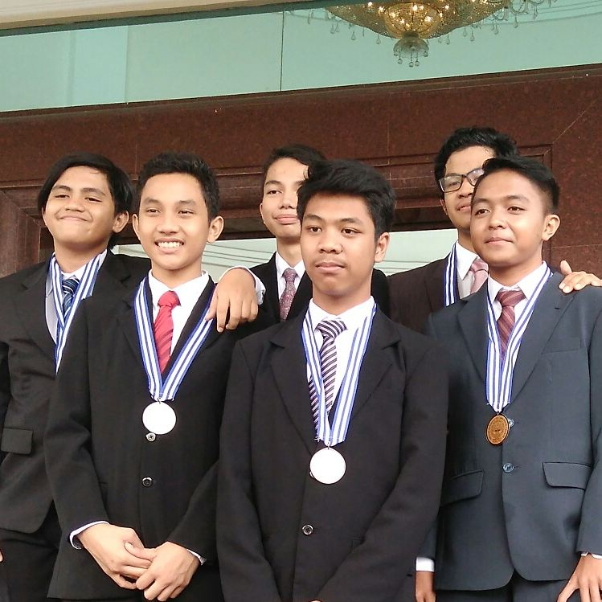

Who Am I ?

His journey began at 23 March 2002, when he logged in to this world with username "Naufal Khairulyanto". He was a curious boy, always wanted to know why such a thing happened. He quickly fell in love with logical things and it led him to technology. Technology has been a part of his life, like an engineer in Battlefield V. His educational path started from Pengadilan 2 Elementary School, where he will achieved his first medal as a newbie. He continued his path to Junior High School 4 Bogor. He mastered a lot of things there. He also met some great friends and a distraction of his journey. He committed to focus more on his journey. He finally got the second medal to reach the higher level. Now, he enter the higher level at Bogor Vocational High School of Chemical Analyst. It drains a lot of his power, but he doesn't give up. He will get the third medal in a glorious way, no matter what happens. It's not the end of his journey. It still a long way to go until he gets the final medal and finally log out from this world, leaving just a username in a Hall of Fame.
